<section class="section" style="border-bottom:none;">
	<div class="container">
		<div class="section-head">
			<span class="eyebrow">Activities</span>
			<h2>其他活動</h2>
		</div>

		<div class="page-prose">
			<h3>大阪飲食文化講座<span style="color:var(--color-muted);font-size:0.7em;font-weight:normal;"> — 2024/4/24</span></h3>
			<p>邀請了荻野老師來介紹大阪的飲食文化，同時也會教大家做好吃的章魚燒！歡迎大家踴躍參與！<br>
			講座主題：大阪飲食文化｜時間：18:00~20:00｜講師：荻野亮一<br>
			講座內容：大阪飲食文化介紹及體驗做章魚燒<br>
			荻野先生からの言葉：美味しいタコ焼きを食べましょう</p>
			<div class="gallery">
				<a class="gallery-item" href="assets/img/uploads/dscn9893_orig.jpg"></a>
				<a class="gallery-item" href="assets/img/uploads/dscn9845_orig.jpg"></a>
			</div>
		</div>

		<div class="page-prose" style="margin-top:48px;padding-top:32px;border-top:1px solid var(--color-line);">
			<h3>2024 春の BBQ<span style="color:var(--color-muted);font-size:0.7em;font-weight:normal;"> — 2024/4/20</span></h3>
			<p>楽しい BBQ パーティでした！たくさん、美味しいものを食べました。ありがとうございました！！</p>
			<div class="gallery">
				<a class="gallery-item" href="assets/img/uploads/dscn9792_orig.jpg"></a>
				<a class="gallery-item" href="assets/img/uploads/dscn9805_orig.jpg"></a>
				<a class="gallery-item" href="assets/img/uploads/dscn9829_orig.jpg"></a>
			</div>
		</div>

		<div class="page-prose" style="margin-top:48px;padding-top:32px;border-top:1px solid var(--color-line);">
			<h3>茶道體驗講座<span style="color:var(--color-muted);font-size:0.7em;font-weight:normal;"> — 2024/4/17</span></h3>
			<p>講座主題：茶道體驗講座｜時間：18:00～20:00｜講師：松村雅子</p>
			<p>這次邀請了松村老師來擔任茶道講座的講師，從茶道的歷史，搭配抹茶用的和菓子種類與季節的關聯性，及茶道的禮儀如千利休四規七則與相關日語，最後我們實際體驗如何為客人泡出一碗好茶，以及相關該遵循的規則以及作為客人應該如何享用和菓子與品茶，這些都是平時日常中接觸不到的體驗。感謝松村老師詳細的解說與示範，讓我們更深刻的了解到茶道是門美麗的藝術。</p>
			<p>松村先生からの言葉（來自松村老師的話）：侘び寂びとは〜千利休の四規七則とは〜中国から伝わる日本の茶の湯文化を一緒に触れてみましょう（什麼是侘寂～什麼是千利休的四規七則～讓我們一起感受一下從中國傳承下來的日本茶道文化。）</p>
			<div class="gallery">
				<a class="gallery-item" href="assets/img/uploads/dscn9780_orig.jpg"></a>
				<a class="gallery-item" href="assets/img/uploads/dscn9788_orig.jpg"></a>
			</div>
		</div>

		<div class="page-prose" style="margin-top:48px;padding-top:32px;border-top:1px solid var(--color-line);">
			<h3>ビジネス日本語講座（商業日語講座）<span style="color:var(--color-muted);font-size:0.7em;font-weight:normal;"> — 2024/4/12</span></h3>
			<p>時間：13:30～15:00｜講師：鈴木淳弘<br>
			講座內容：台湾と日本のビジネスマナー（台灣與日本的職場禮儀）、ビジネス日本語（商業日語）</p>
			<p>鈴木先生からの言葉（來自鈴木老師的話）：この度は特別講座にお招きいただき、ありがとうございます（謝謝你們邀請我來擔任特別講座的講師）。日本語でビジネスをする上でのコツ、基本から応用までを、なるべく分かりやすく、そして楽しくお伝えできればと考えております（希望能夠以簡單易懂的方式，並在歡樂的氣氛下，傳授商業上日語溝通的基本訣竅與應用）。</p>
			<div class="gallery">
				<a class="gallery-item" href="assets/img/uploads/dscn9756_orig.jpg"></a>
				<a class="gallery-item" href="assets/img/uploads/dscn9760_orig.jpg"></a>
			</div>
		</div>

		<div class="page-prose" style="margin-top:48px;padding-top:32px;border-top:1px solid var(--color-line);">
			<h3>声優チャレンジワークショップ<span style="color:var(--color-muted);font-size:0.7em;font-weight:normal;"> — 2023/5/15</span></h3>
			<p>由國立陽明交通大學學生與日本籍小學生以小組方式共同完成配音作品。期待參加者在活動中能跨越不同年齡層，以日文進行交流，並學習更豐富的日文口說表達。目標為強化日語能力、強化交流能力、強化小組分工合作能力。由衷期待各位小學生的參加。</p>
			<p>【報名資格】能以日語進行活動之國小學生｜【活動時間】2023 年 4 月 30 日（日）｜【報名方式】已截止</p>
			<div class="gallery">
				<a class="gallery-item" href="assets/img/uploads/344222152-1644708986045399-3450186856526350694-n_orig.jpg"></a>
				<a class="gallery-item" href="assets/img/uploads/344218614-1318452989089020-1476850244821131068-n_orig.jpg"></a>
			</div>
		</div>

		<div class="page-prose" style="margin-top:48px;padding-top:32px;border-top:1px solid var(--color-line);">
			<h3>TAKENOKO 特別講座<span style="color:var(--color-muted);font-size:0.7em;font-weight:normal;"> — 2022/3/29</span></h3>
			<p>講座（一）主題：從動漫理解日語文化，從鬼滅之刃剖析日本文化之美意識及深層心理</p>
			<p>簡介：以日本動漫近來的名作《鬼滅之刃》為主題，深入分析作中台詞並從中認識日本人的美學。日文時常有弦外之音，尤其本作更有許多部份建立在日本人獨特的美學上。若只是望文生義，容易察覺不到作者真正的意涵而一知半解，無法完全的享受此作。此講座希望透過大家都熟悉的題材，與大家一起解讀簡單字句外言外之意。※不會日文也能參加</p>
			<p>時間：04 月 22 日（五）17:30～19:00（20 分鐘前開始報到）｜地點：A509｜講師：陳慶彰老師（東吳大學）</p>
		</div>

		<div class="page-prose" style="margin-top:48px;padding-top:32px;border-top:1px solid var(--color-line);">
			<h3>百人一首「競技かるた」體驗活動<span style="color:var(--color-muted);font-size:0.7em;font-weight:normal;"> — 2017/12/23</span></h3>
			<p>詩歌的旋律驟然響起，旋律裡流淌著百人一首的優美詩句。當詩句片段地嘎然而止，你／妳是否能迅速在茫茫詩海的卡牌中，精準地找出屬於詩句未完待續的美麗。</p>
			<div class="gallery">
				<a class="gallery-item" href="assets/img/uploads/25626827-2004310292920351-3538276441085263738-o_1_orig.jpg"></a>
				<a class="gallery-item" href="assets/img/uploads/25587873-2004310176253696-2052814393922391971-o_orig.jpg">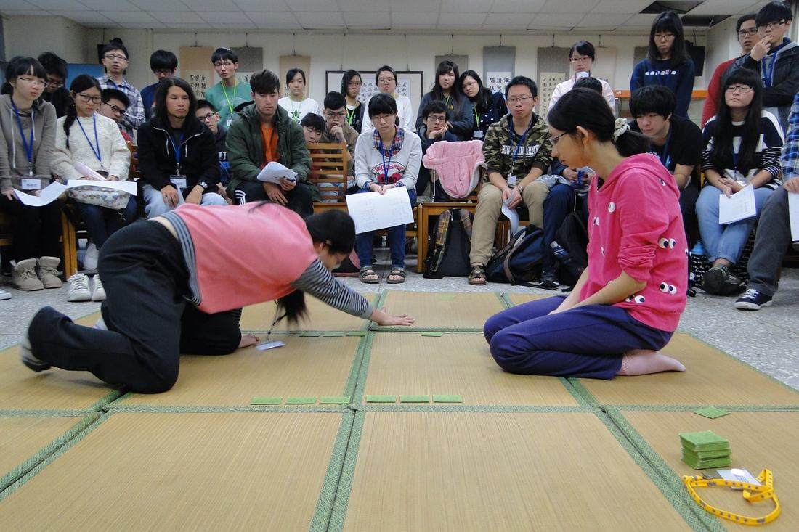</a>
				<a class="gallery-item" href="assets/img/uploads/25594154-2004310179587029-5997044884945569655-n_orig.jpg">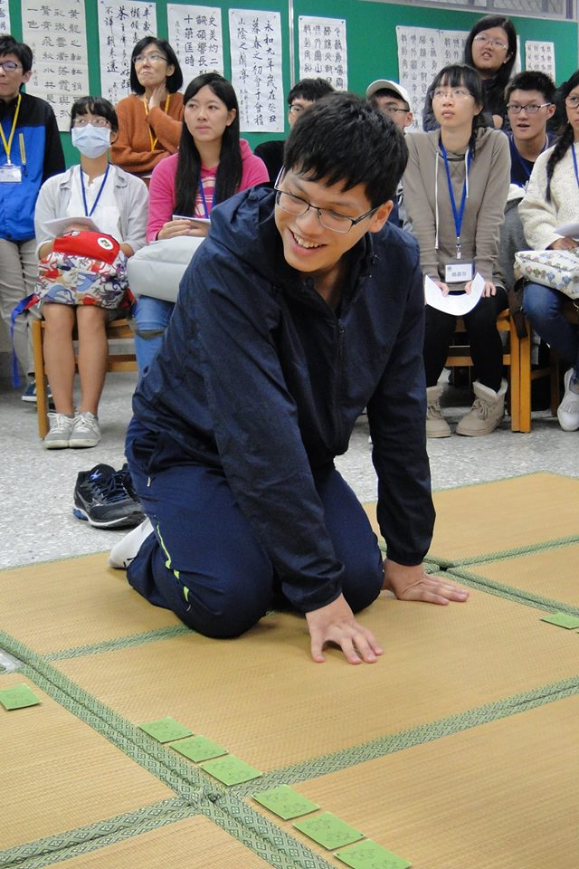</a>
				<a class="gallery-item" href="assets/img/uploads/25594400-2004310169587030-886385560436681350-n_orig.jpg">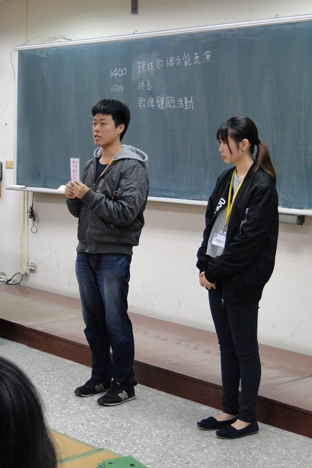</a>
				<a class="gallery-item" href="assets/img/uploads/25626129-2004310069587040-541737466537593079-o_orig.jpg">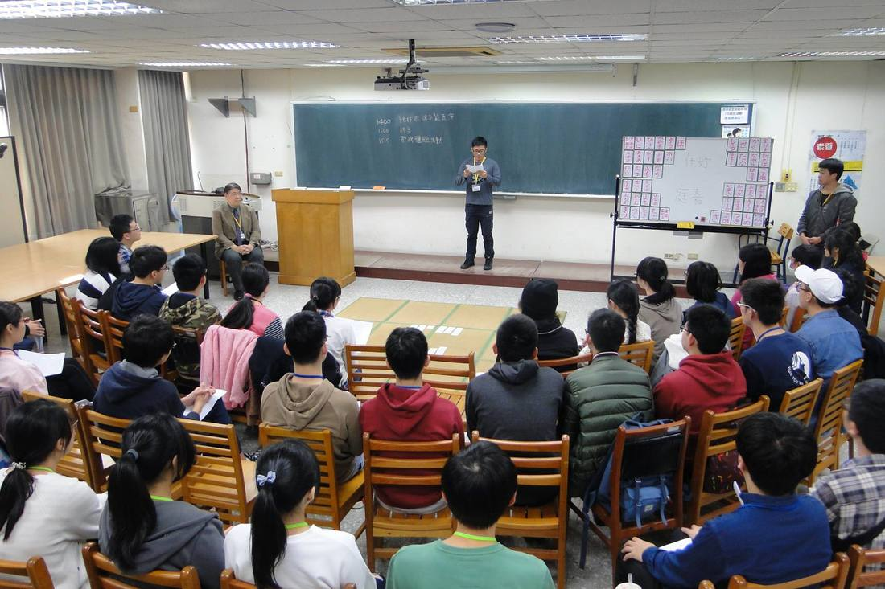</a>
				<a class="gallery-item" href="assets/img/uploads/25627191-2004310332920347-3454817829561131696-o_1_orig.jpg">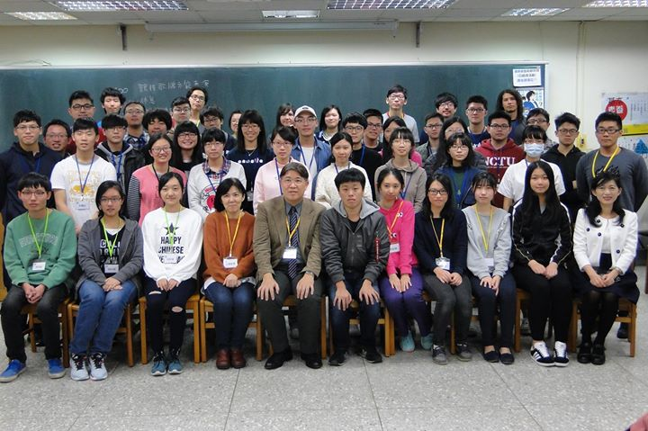</a>
				<a class="gallery-item" href="assets/img/uploads/25626918-2004310062920374-7199772789689456396-o_orig.jpg">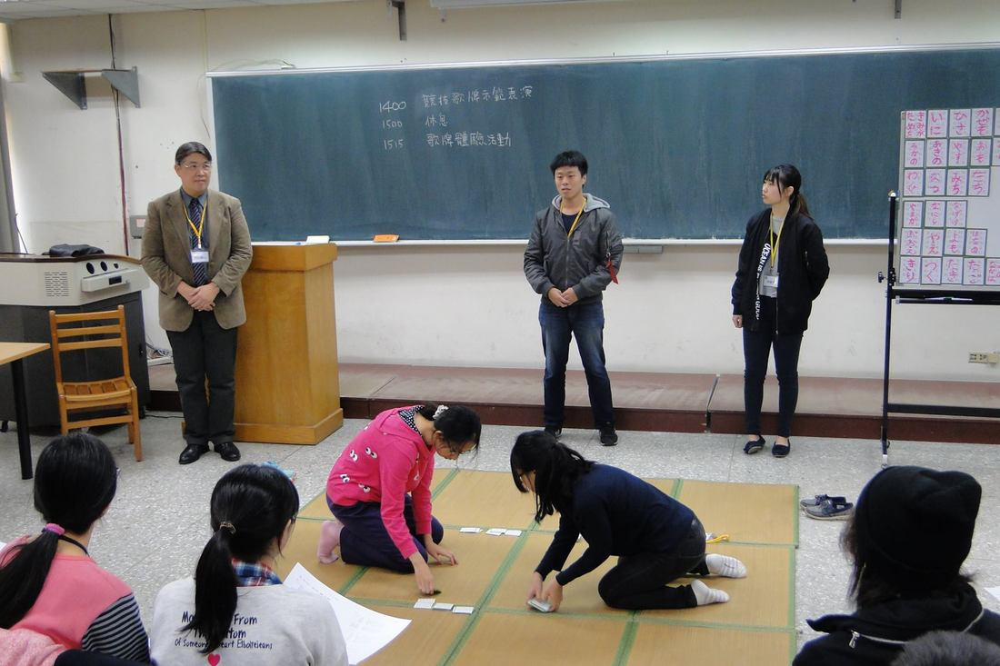</a>
			</div>
		</div>

		<div class="page-prose" style="margin-top:48px;padding-top:32px;border-top:1px solid var(--color-line);">
			<h3>ANIME de NIHON-GO！～看動畫體驗日本活動～<span style="color:var(--color-muted);font-size:0.7em;font-weight:normal;"> — 2017/12/20</span></h3>
			<p>日本動畫裡充滿魅力的角色、富含張力的劇情以及令人悠然神往的配樂總是讓人眼睛為之一亮！世界上有越來越多年輕人因為對日本動畫深深著迷，進而開始探索日文學習的天地。那如果將動畫與日文學習結合呢？那就是日本文化週主打的活動之一：ANIME de NIHON-GO 啦！活動當天將讓各位欣賞講師自製的原創動畫作品，並在陶醉於動畫的內容之餘以日文進行愉快的交流，是喜歡動畫的你／妳絕對不能錯過的活動喔！</p>
			<p>內容：觀賞老師製作的原創動畫，以此動畫為主題進行日文交流｜講師：日本台灣交流協會 矢崎滿夫｜時間：12/20（三）18:00~20:30｜地點：交通大學綜合一館五樓 509 教室</p>
			<div class="gallery">
				<a class="gallery-item" href="assets/img/uploads/19-4_orig.jpg"></a>
				<a class="gallery-item" href="assets/img/uploads/25488203-2000749066609807-3922623590153071454-o_orig.jpg">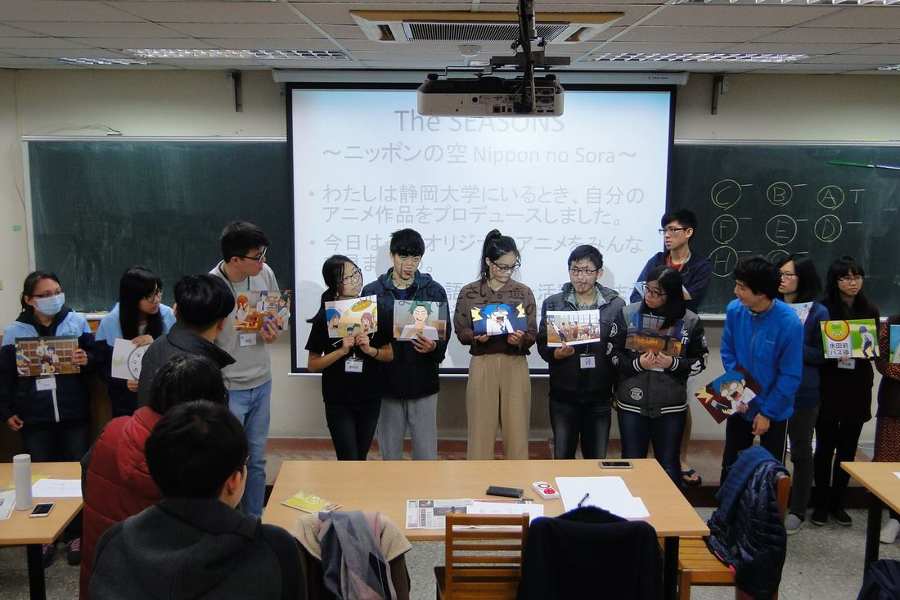</a>
				<a class="gallery-item" href="assets/img/uploads/25488331-2000748979943149-8329697454320379073-o_orig.jpg">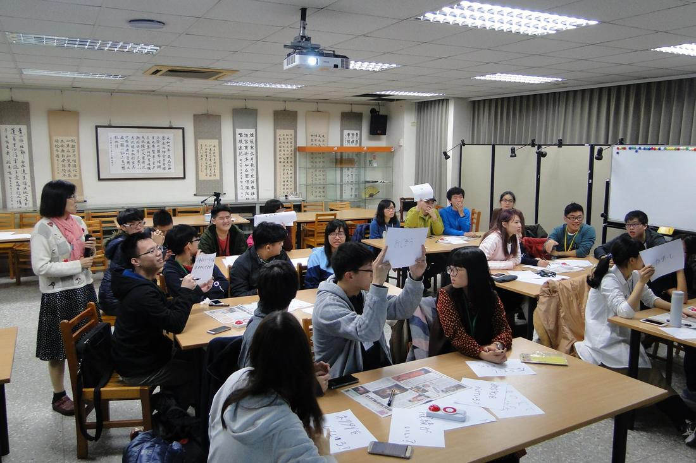</a>
				<a class="gallery-item" href="assets/img/uploads/25531971-2000749069943140-3434380900866995607-o_orig.jpg">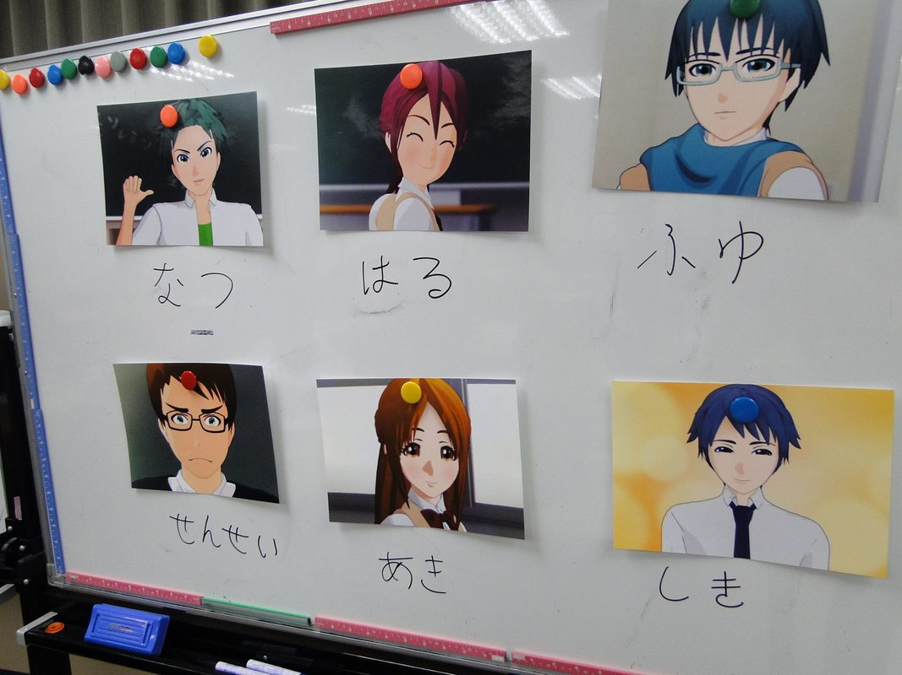</a>
				<a class="gallery-item" href="assets/img/uploads/25626455-2000748973276483-6512366330290027676-o_orig.jpg">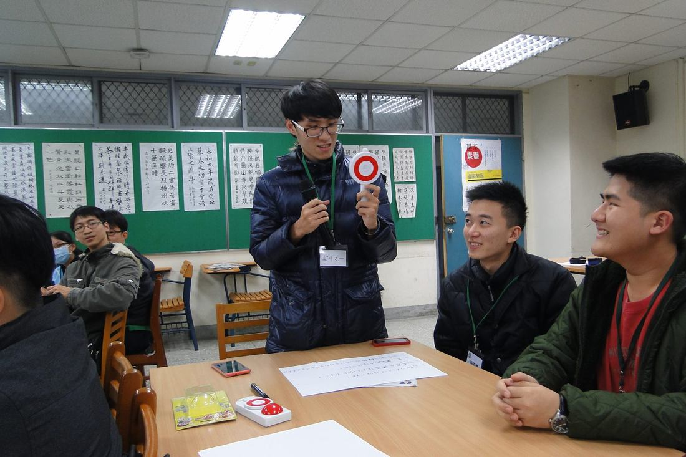</a>
				<a class="gallery-item" href="assets/img/uploads/25532054-2000748983276482-7809081727220056539-o_orig.jpg">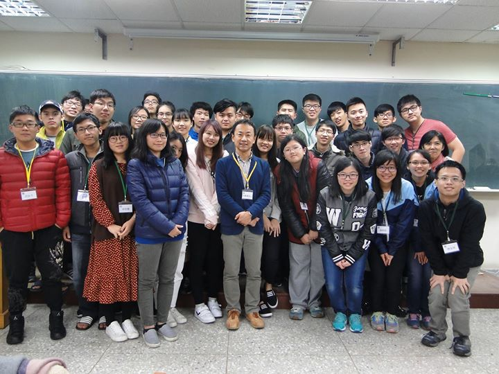</a>
				<a class="gallery-item" href="assets/img/uploads/25626865-2000749053276475-2106444720436975423-o_orig.jpg">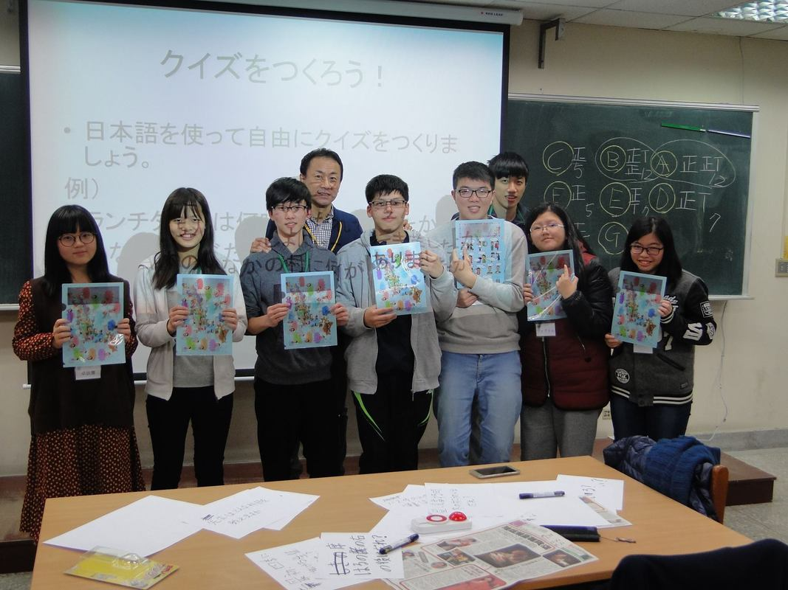</a>
			</div>
		</div>
	</div>
</section>
